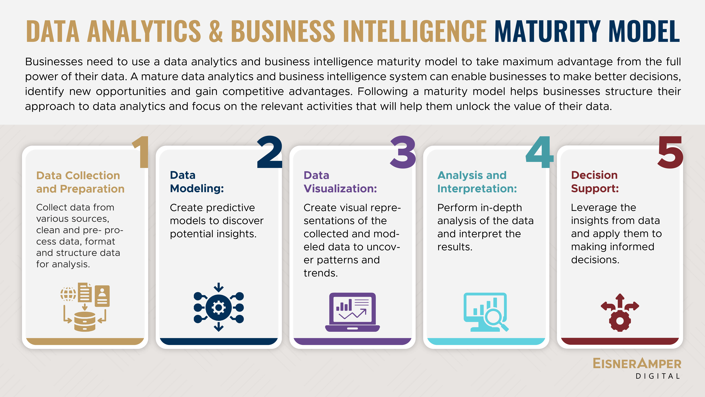
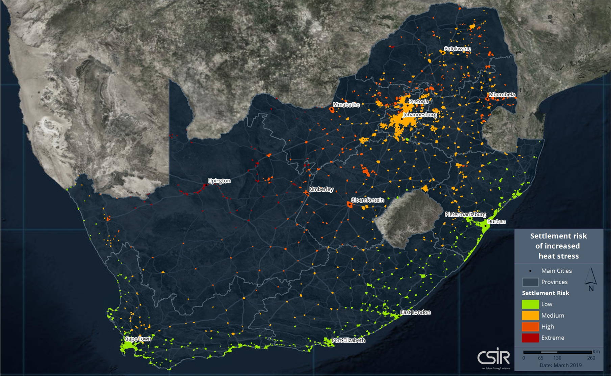

What I bring
I enjoy solving complex problems by combining analytical thinking with practical implementation.
My work sits at the intersection of data, systems, and automation, with a focus on building dependable solutions.
Data Scientist • Data Engineer • Test Automation Engineer
I combine machine learning, statistical analysis, data engineering, cloud platforms, and test automation to build reliable solutions for analytics, reporting, and operational data systems.
Professional summary
I enjoy solving complex problems by combining analytical thinking with practical implementation.
My work sits at the intersection of data, systems, and automation, with a focus on building dependable solutions.
BSc in Environmental Sciences with Geography and Computer Science
North-West University
Postgraduate Diploma in Data Science
Stadio Higher Education
Capabilities
Selected work


Retail intelligence workflow that turned messy source data into a structured and reusable BI process.


Spatial and statistical analysis of climate variability and urban heat patterns across South Africa.
Certifications
Contact
Email: slthakgalo04@gmail.com